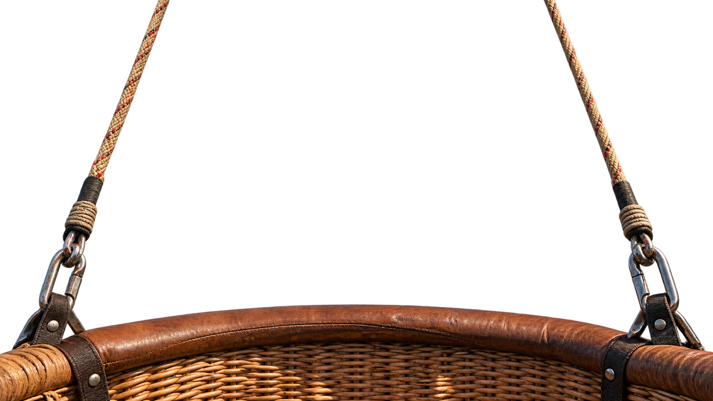

Aerostar — Real Wind Hot Air Balloon Journey
Select a launch point
WORLD POSITION

BALLOON · LOW-ALTITUDE VIEW
×
Click anywhere on the map to choose a launch point
Choose your launch point
Wind: waiting for location
▶ START
↺ RESET
Preparing your balloon…
Choose a place on Earth and let the wind decide the journey.